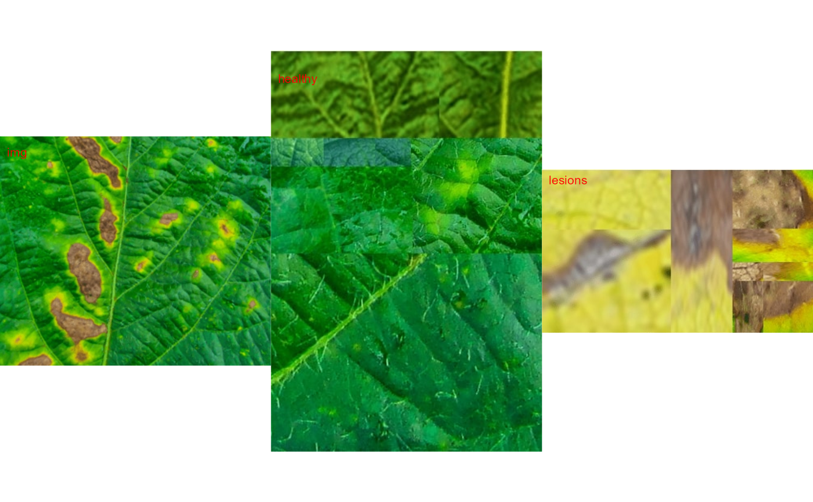
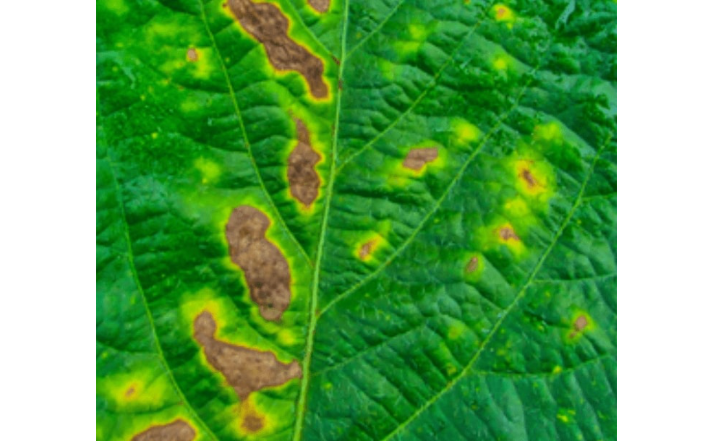
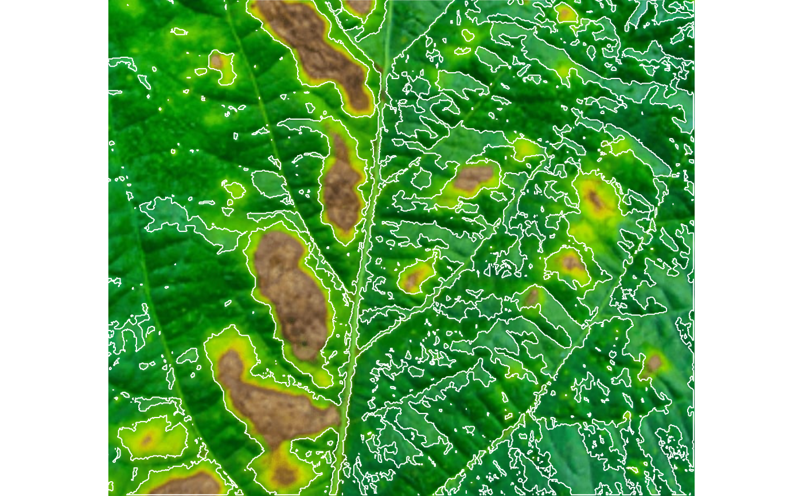
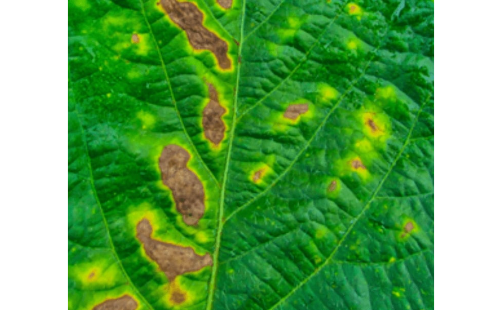
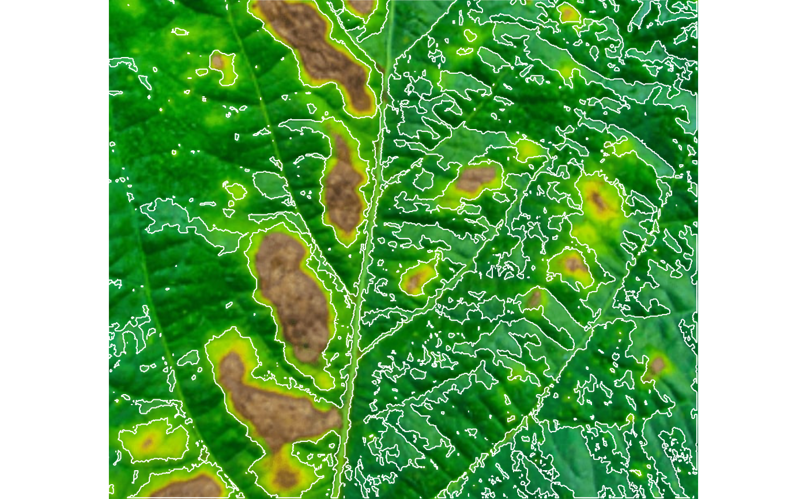

measure_disease()computes the percentage of symptomatic leaf area and (optionally) counts and compute shapes (area, perimeter, radius, etc.) of lesions in a sample or entire leaf using color palettes. See more at Details.measure_disease_iter()provides an iterative section formeasure_disease(), where the user picks up samples in the image to create the needed color palettes.
Usage
measure_disease(
img,
img_healthy = NULL,
img_symptoms = NULL,
img_background = NULL,
pattern = NULL,
filter = 10,
parallel = FALSE,
workers = NULL,
resize = FALSE,
fill_hull = TRUE,
index_lb = NULL,
index_dh = "GLI",
has_white_bg = FALSE,
threshold = NULL,
invert = FALSE,
lower_size = NULL,
upper_size = NULL,
topn_lower = NULL,
topn_upper = NULL,
randomize = TRUE,
nsample = 3000,
watershed = FALSE,
lesion_size = "medium",
tolerance = NULL,
extension = NULL,
show_features = FALSE,
show_segmentation = FALSE,
plot = TRUE,
show_original = TRUE,
show_background = TRUE,
show_contour = TRUE,
contour_col = "white",
contour_size = 1,
col_leaf = NULL,
col_lesions = NULL,
col_background = NULL,
marker = FALSE,
marker_col = NULL,
marker_size = NULL,
save_image = FALSE,
prefix = "proc_",
name = NULL,
dir_original = NULL,
dir_processed = NULL,
verbose = TRUE
)
measure_disease_iter(
img,
has_background = TRUE,
r = 2,
viewer = get_pliman_viewer(),
show = "rgb",
index = "NGRDI",
...
)Arguments
- img
The image to be analyzed.
- img_healthy
A color palette of healthy tissues.
- img_symptoms
A color palette of lesioned tissues.
- img_background
A color palette of the background (if exists). These arguments can be either an
Imageobject stored in the global environment or a character value. If a chacarceter is used (eg.,img_healthy = "leaf"), the function will search in the current working directory a valid image that contains "leaf"in the name. Note that if two images matches this pattern, an error will occour.- pattern
A pattern of file name used to identify images to be processed. For example, if
pattern = "im"all images that the name matches the pattern (e.g., img1.-, image1.-, im2.-) will be analyzed. Providing any number as pattern (e.g.,pattern = "1") will select images that are named as 1.-, 2.-, and so on.- filter
Performs median filtering in the binary image that segments the leaf from background? By default, a median filter of
size = 10is applied. This is useful to reduce the noise and segment the leaf and background more accurately. See more atimage_filter(). Set toFALSEto cancel median filtering.- parallel
Processes the images asynchronously (in parallel) in separate R sessions running in the background on the same machine. It may speed up the processing time, especially when
patternis used is informed. The number of sections is set up to 30% of available cores.- workers
A positive numeric scalar or a function specifying the maximum number of parallel processes that can be active at the same time.
- resize
Resize the image before processing? Defaults to
FALSE. Use a numeric value of range 0-100 (proportion of the size of the original image).- fill_hull
Fill holes in the image? Defaults to
TRUE. This is useful to fill holes in leaves, e.g., those caused by insect attack, ensuring the hole area will be accounted for the leaf, not background.- index_lb
The index used to segment the foreground (e.g., leaf) from the background. If not declared, the entire image area (pixels) will be considered in the computation of the severity.
- index_dh
The index used to segment diseased from healthy tissues when
img_healthyandimg_symptomsare not declared. Defaults to"GLI". Seeimage_index()for more details.- has_white_bg
Logical indicating whether a white background is present. If
TRUE, pixels that have R, G, and B values equals to 1 will be considered asNA. This may be useful to compute an image index for objects that have, for example, a white background. In such cases, the background will not be considered for the threshold computation.- threshold
By default (
threshold = NULL), a threshold value based on Otsu's method is used to reduce the grayscale image to a binary image. If a numeric value is informed, this value will be used as a threshold. Inform any non-numeric value different than "Otsu" to iteratively choose the threshold based on a raster plot showing pixel intensity of the index. Must be a vector of length 2 to indicate the threshold forindex_lbandindex_dh, respectively.- invert
Inverts the binary image if desired. This is useful to process images with black background. Defaults to
FALSE.- lower_size
Lower limit for size for the image analysis. Leaf images often contain dirt and dust. To prevent dust from affecting the image analysis, the lower limit of analyzed size is set to 0.1, i.e., objects with lesser than 10% of the mean of all objects are removed. One can set a known area or use
lower_limit = 0to select all objects (not advised).- upper_size
Upper limit for size for the image analysis. Defaults to
NULL, i.e., no upper limit used.- topn_lower, topn_upper
Select the top
nlesions based on its area.topn_lowerselects thenlesions with the smallest area whereastopn_upperselects thenlesions with the largest area.- randomize
Randomize the lines before training the model? Defaults to
TRUE.- nsample
The number of sample pixels to be used in training step. Defaults to
3000.- watershed
If
TRUE(Default) implements the Watershed Algorithm to segment lesions connected by a fairly few pixels that could be considered as two distinct lesions. IfFALSE, lesions that are connected by any pixel are considered unique lesions. For more details seeEBImage::watershed().- lesion_size
The size of the lesion. Used to automatically tune
toleranceandextensionparameters. One of the following."small"(2-5 mm in diameter, e.g, rust pustules),"medium"(0.5-1.0 cm in diameter, e.g, wheat leaf spot),"large"(1-2 cm in diameter, and"elarge"(2-3 cm in diameter, e.g, target spot of soybean).- tolerance
The minimum height of the object in the units of image intensity between its highest point (seed) and the point where it contacts another object (checked for every contact pixel). If the height is smaller than the tolerance, the object will be combined with one of its neighbors, which is the highest. Defaults to
NULL, i.e., starting values are set up according to the argumentlesion_size.- extension
Radius of the neighborhood in pixels for the detection of neighboring objects. Defaults to 20. Higher value smooths out small objects.
- show_features
If
TRUEreturnS the lesion features such as number, area, perimeter, and radius. Defaults toFALSE.- show_segmentation
Shows the object segmentation colored with random permutations. Defaults to
TRUE.- plot
Show image after processing? Defaults to
TRUE.- show_original
Show the symptoms in the original image?
- show_background
Show the background? Defaults to
TRUE. A white background is shown by default whenshow_original = FALSE.- show_contour
Show a contour line around the lesions? Defaults to
TRUE.- contour_col, contour_size
The color and size for the contour line around objects. Defaults to
contour_col = "white"andcontour_size = 1.- col_leaf
Leaf color after image processing. Defaults to
"green"- col_lesions
Symptoms color after image processing. Defaults to
"red".- col_background
Background color after image processing. Defaults to
"NULL".- marker, marker_col, marker_size
The type, color and size of the object marker. Defaults to
NULL, which shows nothing. Usemarker = "point"to show a point in each lesion ormarker = "*"where"*"is any variable name of theshapedata frame returned by the function.- save_image
Save the image after processing? The image is saved in the current working directory named as
proc_*where*is the image name given inimg.- prefix
The prefix to be included in the processed images. Defaults to
"proc_".- name
The name of the image to save. Use this to overwrite the name of the image in
img.- dir_original, dir_processed
The directory containing the original and processed images. Defaults to
NULL. In this case, the function will search for the imageimgin the current working directory. After processing, whensave_image = TRUE, the processed image will be also saved in such a directory. It can be either a full path, e.g.,"C:/Desktop/imgs", or a subfolder within the current working directory, e.g.,"/imgs".- verbose
If
TRUE(default) a summary is shown in the console.- has_background
A logical indicating if the image has a background to be segmented before processing.
- r
The radius of neighborhood pixels. Defaults to
2. A square is drawn indicating the selected pixels.- viewer
The viewer option. If not provided, the value is retrieved using
get_pliman_viewer(). This option controls the type of viewer to use for interactive plotting. The available options are "base" and "mapview". If set to "base", the base R graphics system is used for interactive plotting. If set to "mapview", the mapview package is used. To set this argument globally for all functions in the package, you can use theset_pliman_viewer()function. For example, you can runset_pliman_viewer("mapview")to set the viewer option to "mapview" for all functions.- show
The show option for the mapview viewer, either
"rgb"or"index".- index
The index to be shown when
show = "rgb".- ...
Further parameters passed on to
measure_disease().
Value
measure_disease()returns a list with the following objects:severityA data frame with the percentage of healthy and symptomatic areas.shape,statisticsIfshow_features = TRUEis used, returns the shape (area, perimeter, etc.) for each lesion and a summary statistic of the results.
measure_disease_iter()returns a list with the following objects:resultsA list with the objects returned bymeasure_disease().leafThe color palettes for the healthy leaf.diseaseThe color palettes for the diseased leaf.backgroundThe color palettes for the background.
Details
In measure_disease(), a general linear model (binomial family) fitted to
the RGB values is used to segment the lesions from the healthy leaf. If a
pallet of background is provided, the function takes care of the details to
isolate it before computing the number and area of lesions. By using pattern
it is possible to process several images with common pattern names that are
stored in the current working directory or in the subdirectory informed in
dir_original.
If img_healthy and img_symptoms are not declared, RGB-based phenotyping of
foliar disease severity is performed using the index informed in index_lb to
first segment leaf from background and index_dh to segment diseased from
healthy tissues.
measure_disease_iter() only run in an interactive section. In this function,
users will be able to pick up samples of images to iteratively create the
needed color palettes. This process calls pick_palette() internally. If
has_background is TRUE (default) the color palette for the background is
first created. The sample of colors is performed in each left-button mouse
click and continues until the user press Esc. Then, a new sampling process is
performed to sample the color of healthy tissues and then diseased tissues.
The generated palettes are then passed on to measure_disease(). All the
arguments of such function can be passed using the ... (three dots).
When show_features = TRUE, the function computes a total of 36 lesion
features (23 shape features and 13 texture features). The Haralick texture
features for each object based on a gray-level co-occurrence matrix (Haralick
et al. 1979). See more details in analyze_objects().
Author
Tiago Olivoto tiagoolivoto@gmail.com
Examples
# \donttest{
library(pliman)
img <- image_pliman("sev_leaf_nb.jpg")
healthy <- image_pliman("sev_healthy.jpg")
lesions <- image_pliman("sev_sympt.jpg")
image_combine(img, healthy, lesions, ncol = 3)

sev <-
measure_disease(img = img,
img_healthy = healthy,
img_symptoms = lesions,
lesion_size = "large",
plot = TRUE)
 # an interactive section
measure_disease_iter(img)
#> Use the first mouse button to pick up BACKGROUND colors. Press Est to exit
#> Use the first mouse button to pick up LEAF colors. Press Est to exit
#> Use the first mouse button to pick up DISEASE colors. Press Est to exit


# }
# an interactive section
measure_disease_iter(img)
#> Use the first mouse button to pick up BACKGROUND colors. Press Est to exit
#> Use the first mouse button to pick up LEAF colors. Press Est to exit
#> Use the first mouse button to pick up DISEASE colors. Press Est to exit


# }